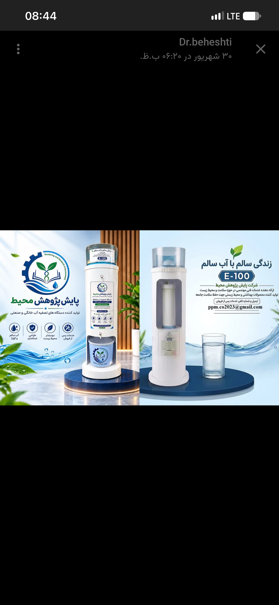
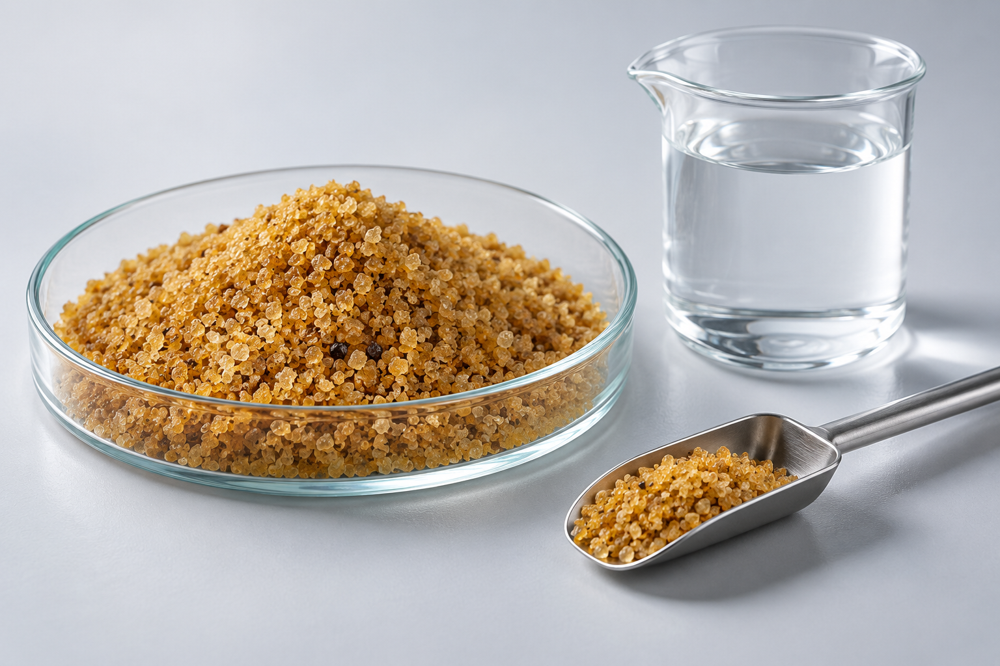
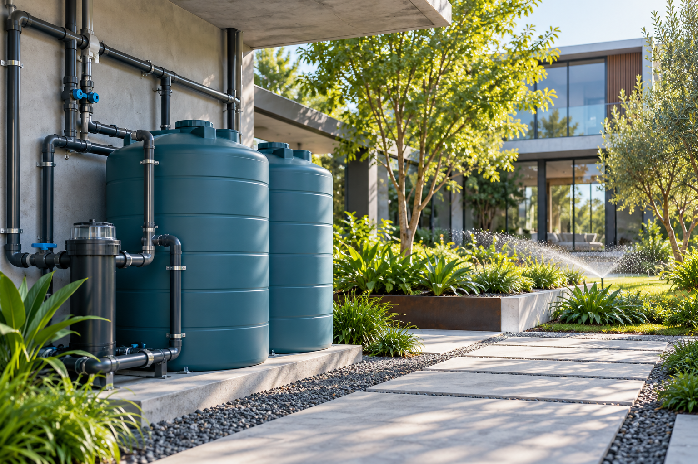

پایش پژوهش محیط
محصولات و فناوریها
با محصولات تصفیه، سنجش و بازچرخانی آب آشنا شوید.

تصفیه در نقطه مصرف
دستگاه تصفیه آب E-100
تصفیه آب با جاذب اختصاصی حذف آرسنیک، بدون نیاز به برق و پمپ؛ راهکاری برای تأمین آب در محل مصرف.
معرفی و مشخصات محصول
۲فناوری جاذب
جاذب اختصاصی حذف آرسنیک
جاذب ویژه برای حذف آرسنیک از آب؛ قابل استفاده در طراحی سامانههای تصفیه متناسب با کیفیت آب ورودی و نیاز مصرف.
معرفی و مشخصات محصول
پایش کیفیت آب
کیت سنجش آرسنیک آب
ابزاری برای سنجش آرسنیک در نمونههای آب و پشتیبانی از برنامههای پایش کیفیت؛ برای انتخاب کیت و دریافت دستورالعمل استفاده با ما تماس بگیرید.
معرفی و مشخصات محصول
۴بازچرخانی آب
سامانه استفاده مجدد از آب خاکستری
راهکاری برای تصفیه آب خاکستری و بازگرداندن آن به چرخه مصرف غیرآشامیدنی؛ با طراحی متناسب با ظرفیت و کاربری پروژه.
معرفی و مشخصات محصولبرای مسئله آب شما، گفتوگو کنیم.
انتخاب محصول، مشاوره فنی یا همکاری پژوهشی